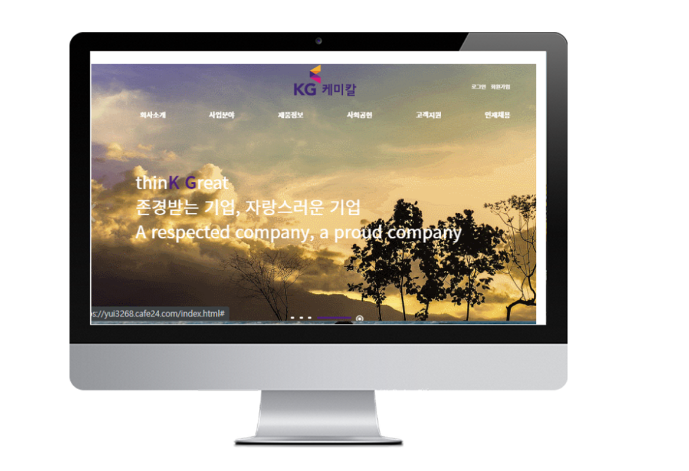

김현중
Kim Hyun Joong
金 賢 中
- yui3268@naver.com
- H.P
- 010-3687-5176
- Address
- 경기도 부천시 소사구 범박동
- 희망연봉 : 면접시 협의
- 지원 부문 : 퍼블리셔, 프론트엔드
경력사항
- 2020. 11 ~ 2022.04
-
(주)인피닉
현대자동차 Shcule 서비스(preboarding/ Boarding/ Onboarding)
모바일,웹,자율주행 검증 testcase 작성 및 수행
학력사항
- 2015. 03 ~ 2021. 02
- 동서울대학교 정보통신학과(ict융합)/전문대(3년제) / 졸업
- 2022. 03 ~ 2023. 02
- 동양미래대학교 정보통신공학과/학사학위/ 졸업예정
포트폴리오
- 
-
KG케미칼 기업형 PC
http://yui3268.cafe24.com/
링크
POSCO M-TECH 홈페이지 PC버전을 디자인 작업부터 웹표준과 접근성을 준수한 HTML5, CSS3 및 JavaScript, JSON, AJAX, PHP 등을 사용하여 구현한 기업형 웹사이트
-
KG케미칼 Mobile 기업형 Mobile
http://yui3268.cafe24.com/mobile
링크
다양한 모바일 디바이스 종류의 해상도에 맞추어 HTML5, CSS3 및 Javascript, JSON, AJAX, PHP을 이용한 모바일 웹사이트 제작
-
Napoli 해상도별 반응형
http://yui3268.cafe24.com/media
링크
Media Query와 jQuery 등을 이용하여 각각의 모바일 기기 해상도에 최적화된 UI로 제작된 반응형 웹사이트.
-
MINIBootStrap 반응형
http://yui3268.cafe24.com/bootstrap
링크
FrameWork인 BootStrap을 이용한 해상도별 UI를 제공하는 반응형 웹사이트
-
구찌 WordPress 반응형
http://yui3268.cafe24.com/wordpress
링크
가장 널리 사용되는 오픈소스 CMS중 WordPress를 사용하여 구현한 구찌 반응형 홈페이지
-
vue SPA 반응형
http://yui3268.cafe24.com/vue/
링크
고성능의 싱글 페이지 애플리케이션(SPA)을 구축을 하고 Vue에서 제공하는 CSS 라이브러리인 'Vuetify'를 활용하여 홈페이지를 제작하고 서울시 착한 가게 json데이터를 불러와 원하는 정보만 검색(filter 기능) 및 탭 기능을 구현한 웹페이지
교육사항
- 2022. 06 ~ 2022. 12
- 프로젝트 기반 프론트엔드(React,Vue)웹&앱 SW개발자 양성과정 그린컴퓨터아카데미 / 수료
직무능력사항
- HTML5 / CSS3 Sass, Less
- 직접 디자인한 시안 또는 디자인 되어있는 웹사이트 시안으로 웹표준과 웹접근성을 준수한 시맨틱 마크업으로 웹사이트를 구현할 수 있고, 요소마다의 스타일을 파악하여 유지 및 보수 가능
- JavaScript/jQuery
- jQuery와 같은 라이브러리를 활용하여 사이트를 구현하는데 필요한 다양한 동적 기능과 이벤트의 구현 가능
- JSON, AJAX
- JSON/XML 파일 포맷과 AJAX를 이용한 비동기 방식의 페이지 구현
- PHP, MySQL
- MySQL 데이터베이스 구축 및 SQL 명령어의 사용이 가능하며 PHP와 JavaScript를 이용한 개발 페이지 제작 가능 (회원가입, 로그인/로그아웃, 아이디/비밀번호 찾기, 게시판, 검색기능 등 구현)
- BootStrap
- JavaScript 반응형 프레임워크 중 하나인 BootStrap을 사용하여 해상도에 따른 최적화된 반응형 웹사이트의 구축 가능
- WordPress
- 다양한 테마와 플러그/위젯을 제공하는 오픈소스 CMS 중 가장 많이 쓰이는 WordPress를 이용하여 홈페이지의 구축 및 관리 가능
- Adobe Photoshop
- 웹페이지 디자인 작업과 대부분의 기능적인 부분에 대한 작업 가능
- Adobe Illustrator
- 웹페이지 작업에 필요한 로고, 아이콘, vector 파일 등의 작업 가능
- Adobe Premier Pro
- 간단한 동영상의 편집 작업 가능
- MS Office 워드/엑셀/ppt
- 업무상 회의나 업무적인 소통을 바로 기록할 수 있으며 기본적인 범위에서의 사용 가능
- git hub
-
원격저장소 git hub 사용
https://github.com/kim-hyunjoonge/www.git 링크